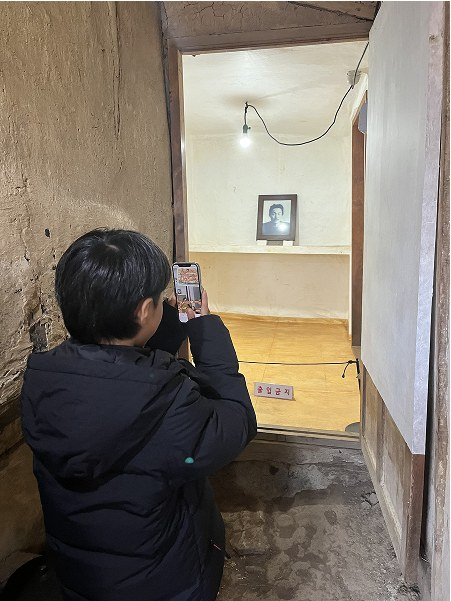
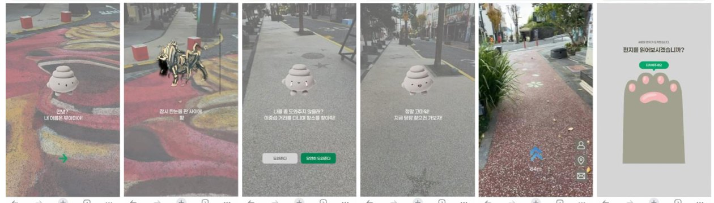

로컬 스토리 AR 트레일
거리와 상권
그 동네에 내려오는 이야기를 거리 곳곳에 놓아, 사람들이 더 오래 걷고 가게에 들르게 합니다. 첫 무대는 서귀포 이중섭거리입니다.
이중섭거리 AR 체험하기에피스페이스 · 서귀포
그 장소의 이야기를 AR로 되살려, 사람들이 골목을 걷고 가게에 들르게 합니다. 서귀포 이중섭거리에서 시작했습니다.

회사소개
이중섭거리는 화가의 이름만 남은 골목이었습니다. 특성화 거리라고 해도, 즐길 이야기가 없으면 사람은 그냥 지나갑니다. 우리는 그 빈자리에 그 장소의 이야기를 다시 놓으려고 서귀포에서 문을 열었습니다.
사람이 멈추는 건 기술이 아닙니다. 그 골목의 이야기입니다. 앱은 없습니다. 가게 앞 NFC를 누르면 브라우저가 열리고, 이야기가 끝나면 옆 가게로 걸어갑니다.
기술

01
가게 앞 태그에 휴대폰을 대면 브라우저에서 바로 열립니다.
02
골목 위에 나타난 캐릭터가 사라진 황소를 같이 찾자고 합니다. 화살표와 남은 거리를 보며 다음 장소로 걷습니다.
03
도착하면 편지가 열리고, 미션을 마치면 제휴 가게 쿠폰으로 이어집니다.
사업분야
지자체, 상권, 관광지, 축제와 함께 일합니다.
거리와 상권
그 동네에 내려오는 이야기를 거리 곳곳에 놓아, 사람들이 더 오래 걷고 가게에 들르게 합니다. 첫 무대는 서귀포 이중섭거리입니다.
이중섭거리 AR 체험하기포토존과 미션
축제와 팝업, 행사장에 AR 포토존과 미션을 만듭니다. 벚꽃 터널 AR에서는 벚꽃잎과 함께 사진을 찍고, 색칠한 도안을 비추면 그림이 AR로 살아납니다.
벚꽃 AR 체험하기Virtual OOH
간판을 세우지 않고, 거리 위에 AR로 가게와 브랜드의 이야기를 띄웁니다. 밴쿠버 랍슨 스트리트 위에 예시로 만든 카페의 광고판을 걸어 두었습니다.
가상 옥외광고 체험하기실적
2025.04
한국관광공사 제16회 예비관광벤처 선정. 실감형 관광콘텐츠 부문.
2025.05
개업. 서귀포시 스타트업베이 입주.
2025.06–12
이중섭거리에서 Web AR 파일럿 운영. 11월에 오프라인 AR을 열고 유료 체험 판매.
해외
캐나다 브리티시컬럼비아 밴쿠버를 거점으로 해외 사업을 준비하고 있습니다.
새 데모의 이름은 빗물에 비친 세계 (Reflections in the Rain)입니다. 밴쿠버 거리의 빗물 웅덩이가 다른 세계를 비추는 창이 되는 WebAR입니다. 현실과 어긋나지 않게 섞이는 것이 핵심입니다.
개발 중
캐나다에서 사업을 꾸려 가는 과정은 인스타그램에 기록하고 있습니다. 에피스페이스의 캐릭터 ‘유미’와 유미의 세계 이야기도 함께 올립니다.
인스타그램에서 함께 보기